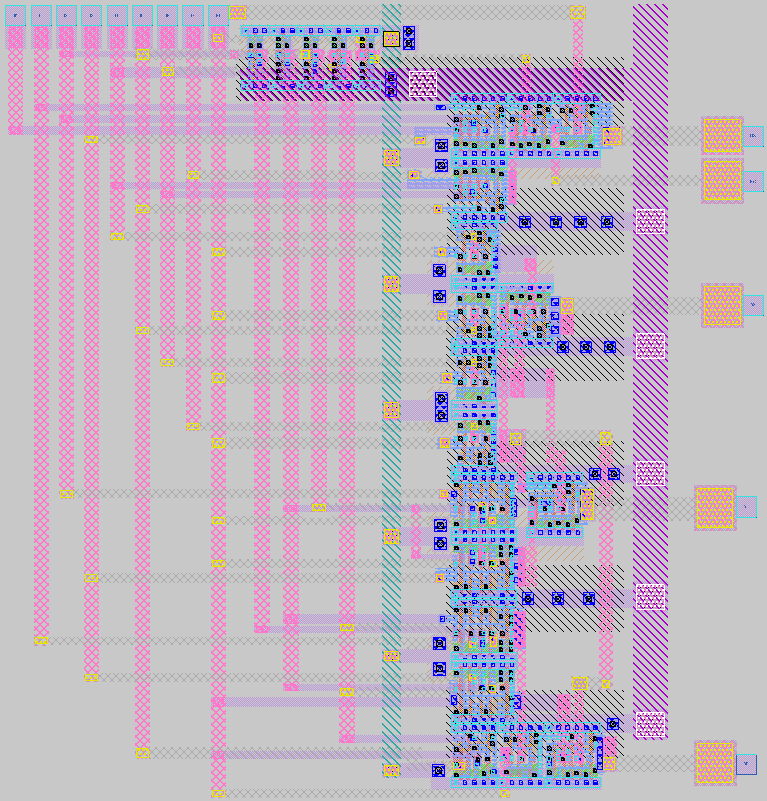
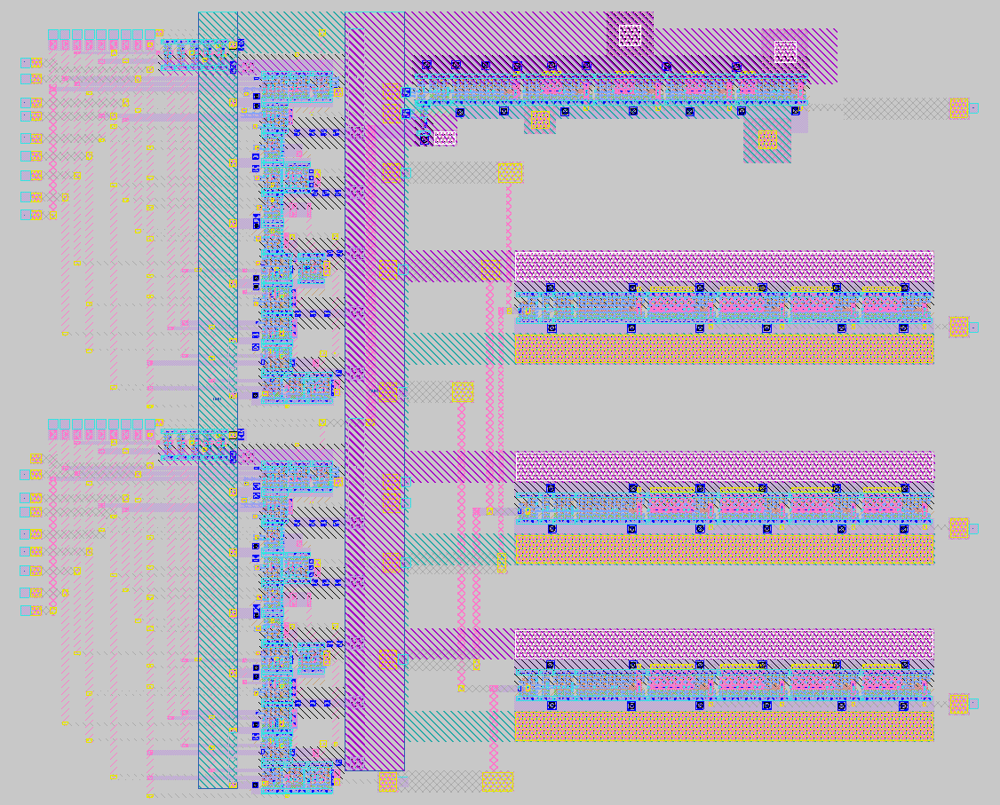
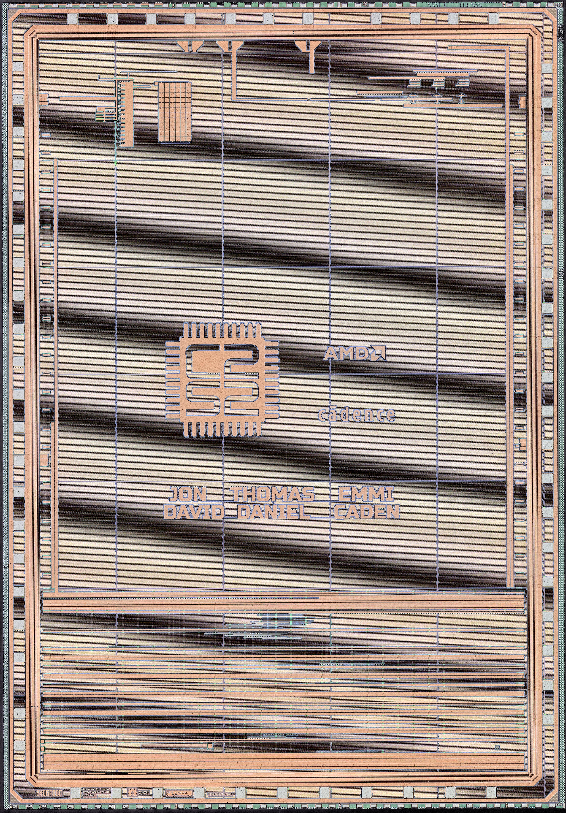
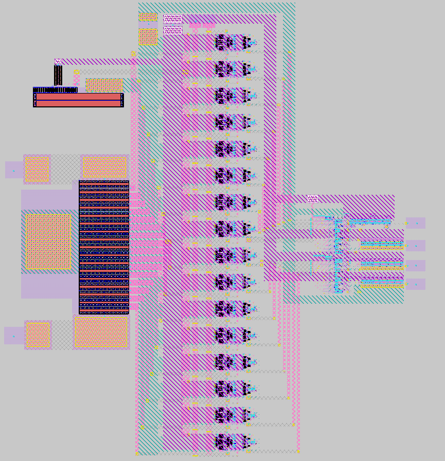
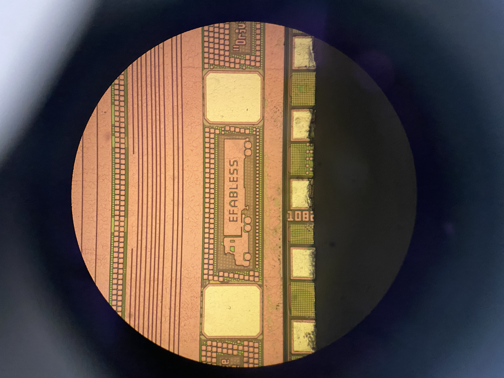
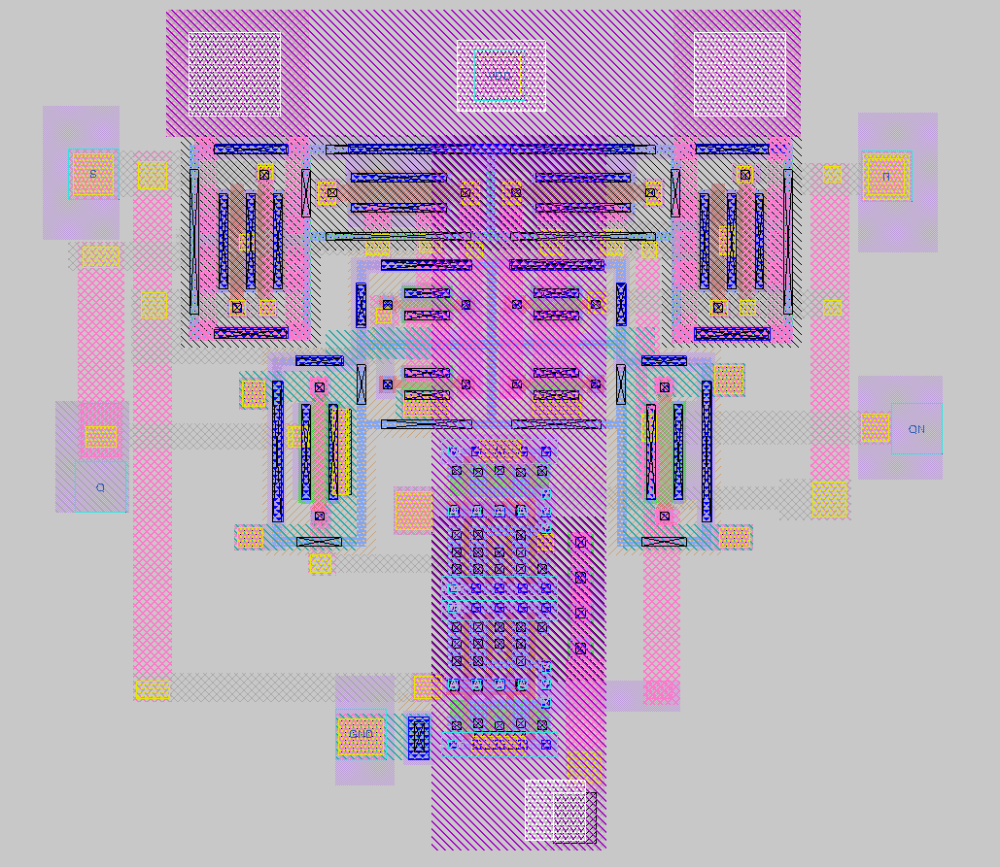

40MS/s 4-Bit Flash ADC in Skywater 130nm






Project Overview
My first ever analog tapeout was a 40MS/s Flash ADC on the open source Skywater 130nm node. Just like the SAR ADC, this project was completed as part of the C2S2 project team. At this time, we still used open source tools, and so the schematic capture and simulation were performed with XSchem and NGSpice, and the layout with Magic VLSI (thank you Tim Edwards!). An added benefit of the open source nature of this project is that I can share lots of cool layout images on the carousel above. Enjoy!
If you are interested in chip art, you can read an associated blog post here.